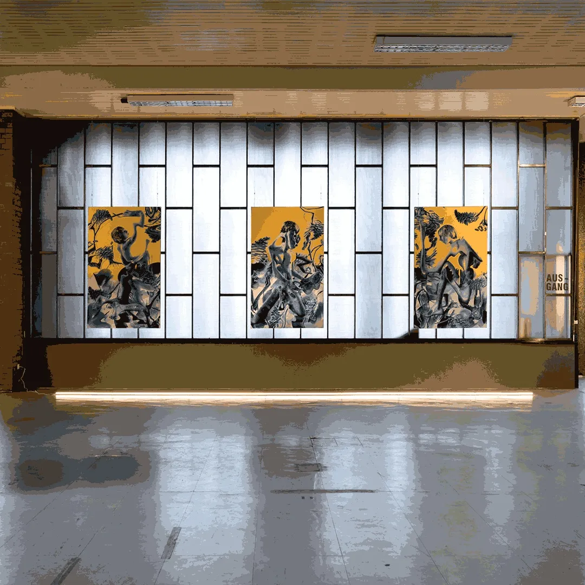

SERKAN SARIER, GENERATION KANACKE “DER SPIEGEL NR.31 / 29.07.1973”
ZWÖLF APOSTELKIRCHE, BERLIN, GERMANY
5 - 8 Nov 2021
Serkan Sarıer Generation Kanacke “Der Spiegel Nr.31 / 29.07.1973” Zwölf Apostelkirsche Berlin Location: An der Apostelkirche 1, 10783 Berlin, Germany
Read more